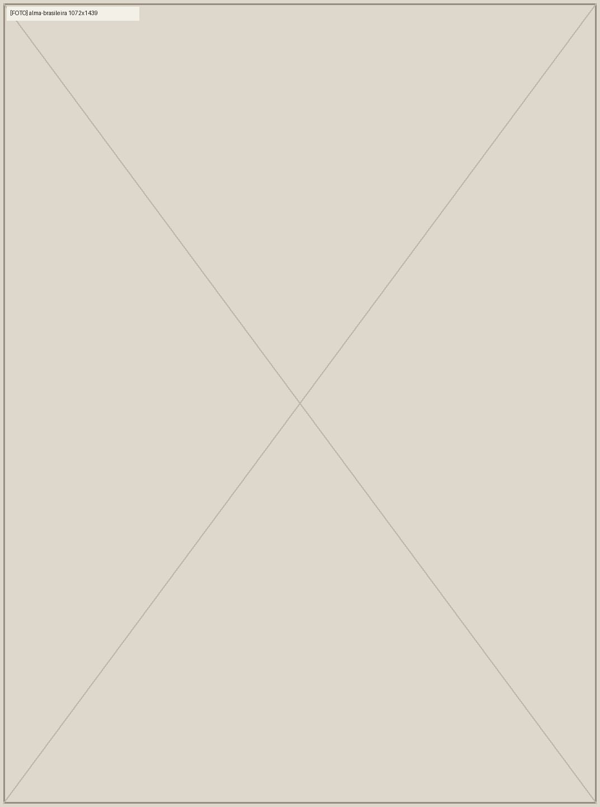
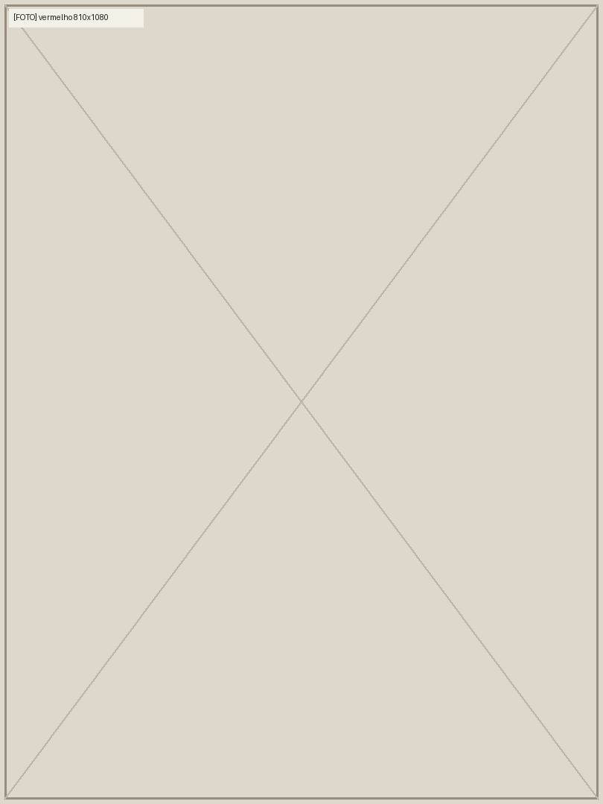
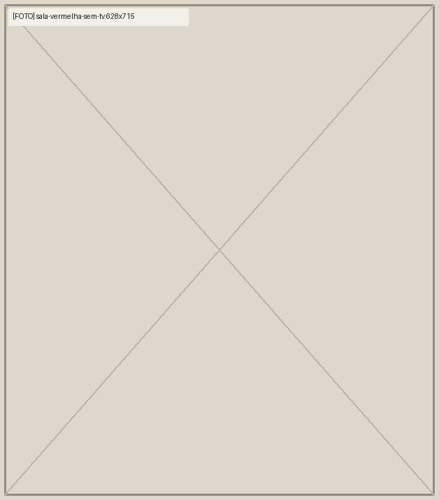
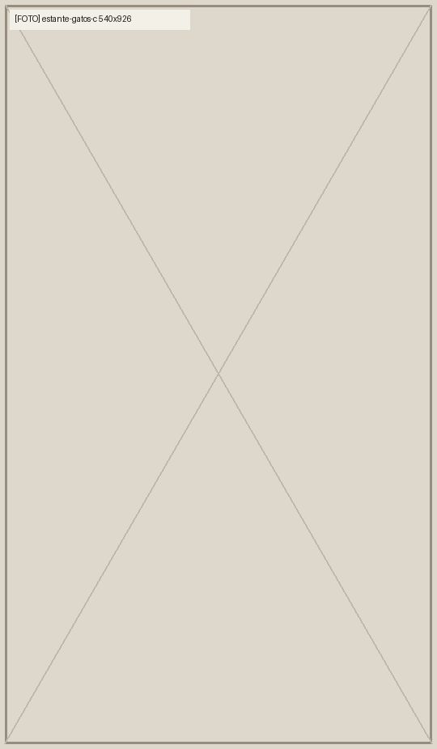
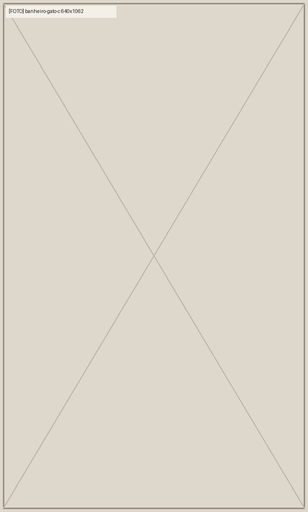
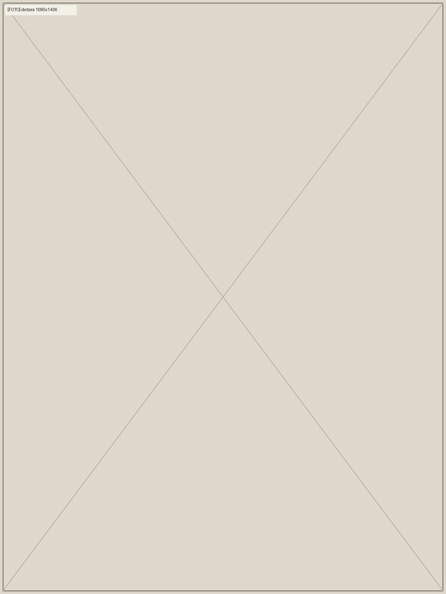

[Projeto 01], [cidade]
[Projeto 01]
[FALTA: o que foi feito neste projeto, nas palavras do cliente]
A história do apartamento
[nota à mão]
[FALTA: o serviço e onde, numa linha]
[Nome da arquiteta] · Arquiteta e urbanista pela [faculdade], formada em [ano]
Conversar com a [Nome]“[FALTA: frase da arquiteta]”
[FALTA: o serviço em uma frase, com o que a casa tem de quem mora]

[Projeto 01], [cidade]
[FALTA: o que foi feito neste projeto, nas palavras do cliente]
A história do apartamento
[nota à mão]
[FALTA: o que foi feito neste projeto, nas palavras do cliente]
Ver o projeto[nota à mão]
[FALTA: o que foi feito neste projeto, nas palavras do cliente]
Ver o projeto[ Projetos ]
[ Como trabalho ]
[FALTA: o que acontece, o que o cliente recebe e quanto tempo leva]Demonstração
[FALTA: o que acontece, o que o cliente recebe e quanto tempo leva]
[FALTA: o que acontece, o que o cliente recebe e quanto tempo leva]
[FALTA: o que acontece, o que o cliente recebe e quanto tempo leva]
Prazos, como o valor é calculado e o que trazer: o guia do cliente

[ Pra quem mora ]
[FALTA: o detalhe, nas palavras do cliente]
Antes do projeto, a casa: seis perguntas sobre a sua casa. No fim, o resumo vai para o WhatsApp da [Nome].
Conte a sua casa

[ A arquiteta ]
Arquiteta e urbanista pela [faculdade], formada em [ano].
“[FALTA: frase da arquiteta]”
[FALTA: como ela atende]
Conversar com a [Nome][ Perguntas ]
[FALTA: resposta da arquiteta]
[FALTA: resposta da arquiteta]
[FALTA: resposta da arquiteta]
[FALTA: resposta da arquiteta]
[FALTA: resposta da arquiteta]
[FALTA: resposta da arquiteta]
[ Contato ]
A conversa é pelo WhatsApp, com a própria [Nome]. Se puder, conte o bairro, o tamanho do apartamento e o que você quer mudar.
Prefere contar antes? Conte a sua casa em seis perguntas; o resumo vai para o WhatsApp dela.